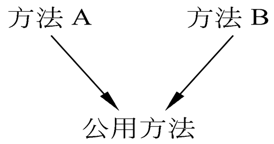

1.程序设计语言
所有语言都可完成面向对象实现，但效果不同。
- 使用非面向对象语言编写面向对象程序，则必须由程序员自己把面向对象概念映射到目标程序中。
- 选用面向对象语言的优点。
2.选择
2.1将来能够占主导地位
产品有生命力
2.2可重用性
2.3类库和开发环境
- 考虑类库中提供有价值类
- 开发环境中提供基本软件工具和类库编辑工具及浏览工具
2.4其他因素
培训服务； 技术支持； 开发工具、开发平台、发行平台；
对机器性能和内存需求；集成已有软件容易程度
3.程序设计风格
3.1提高可重用性
（1）提高方法的内聚
方法只完成单个功能。涉及多个不相关功能，分解。
（2）减小方法的规模。
方法规模过大，分解。
（3）保持方法的一致性
功能相似方法有一致名字、参数特征（包括参数个数、类型和次序）、返回值类型、使用条件及出错条件等。
（4）把策略与实现分开
- 负责做出决策，提供变元，管理全局资源，称策略方法。
- 负责完成具体操作，称实现方法。
- 实现方法相对独立，可在其它系统中重用，将二者分开。
（5）全面覆盖
- 应针对所有组合写方法。
- 当前应用需要：获取表中第一元素
- 提高可重用写：获取表中最后一元素
- 处理正常值
- 对空值、极限值、界外值做出响应
（6）尽量不用全局信息
降低方法与外界耦合程度。
（7）利用继承机制
实现共享和提高重用程度的主要途径。
1）调用子过程
把公共代码分离出来，构成一个公用方法。

2）分解因子
从不同类相似方法分解出不同的代码，余下作为公用方法中公共代码。把分解出的因子作为名字相同算法不同的方法，在不同类中定义。
3）使用委托
4）代码封装在类中
把被重用的代码封装在类中。
3.2提高可扩充性
（1）封装实现策略
应把类的实现策略（包括数据结构、算法等）封装起来，对外提供公有接口。
（2）不要用一个方法遍历多条关联链
一个方法应只包含对象模型中有限内容。否则导致方法过分复杂，不易理解和修改扩充。
（3）避免使用多分支语句
- 增添新类时会修改原有的代码。
- 合理利用多态性机制。
（4）精心确定公有方法
公有方法是向公众公布的接口。
3.3提高健壮性
（1）预防用户操作错误
任何输入（错误），给出提示信息，再次接收用户输入。
（2）检查参数合法性
（3）不预先确定限制条件
使用动态内存分配机制，创建未预先设定限制条件数据结构。